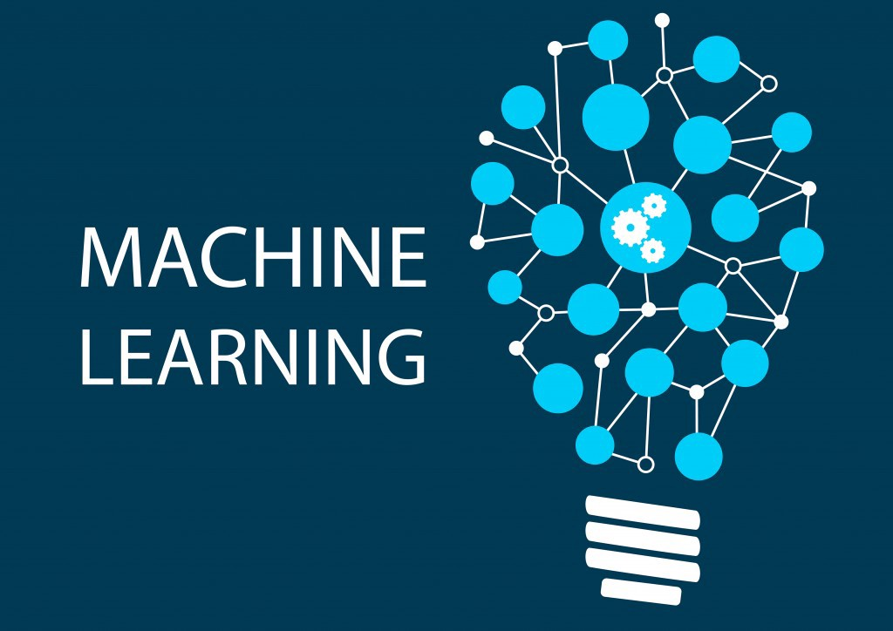
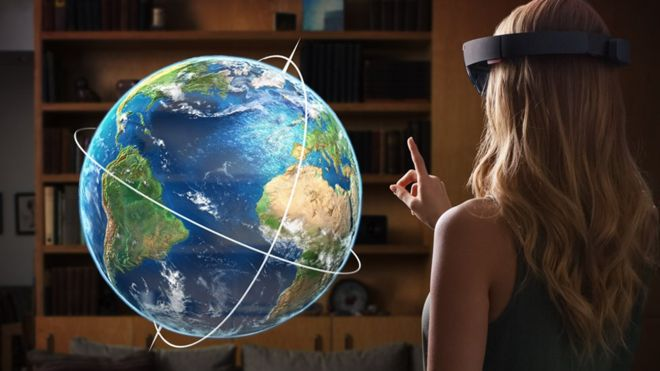
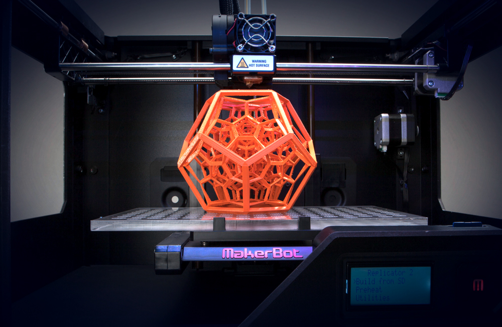

HTML5
HTML5 (HyperText Markup Language, versión 5) es la quinta revisión importante del lenguaje básico de la World Wide Web, HTML .HTML5 especifica dos variantes de sintaxis para HTML: una «clásica», HTML (text/html), conocida como HTML5, y una variante XHTML conocida como sintaxis XHTML5.
HTML5 establece una serie de nuevos elementos y atributos que reflejan el uso típico de los sitios web modernos.Algunos de ellos son técnicamente similares a las etiquetas div y span.
HTML5 es compatible con todos los navegadores modernos. Además, todos los navegadores, antiguos y nuevos, manejan automáticamente elementos no reconocidos como elementos en línea.HTML5 define ocho nuevos elementos semánticos . Todos estos son elementos de nivel de bloque .
Más información aquí

CSS3
Es la última evolución del lenguaje de las Hojas de Estilo en Cascada (Cascading Style Sheets), y pretende ampliar la versión CSS2.1 Las partes experimentales son particulares para cada navegador y deberían ser evitadas en entornos de producción, o usadas con extrema precaución, ya que tanto la sintaxis como la semántica pueden cambiar en el futuro. Trae consigo muchas novedades altamente esperadas , como las esquinas redondeadas, sombras,gradientes , transiciones o animaciones , y nuevos layouts como multi-columnas , cajas flexibles o maquetas de diseño en cuadrícula (grid layouts).
Formalmente, no existe un estandar de CSS3 por sí solo cada módulo es estandarizado independientemente,por lo que el estandar CSS consiste en CSS2.1 Estos módulos extienden y mejoran la especificación CSS2.1 la cual construye el núcleo de la especificación.
El Nivel 2 de CSS necesitó 9 años, desde Agosto de 2002 hasta Junio de 2011, para alcanzar el estado de Recomendación. Esto fué debido al hecho de que algunas características secundarias fueron retiradas de las especificaciones globales, con el fin de acelerar la normalización de las características no problemáticas, el Grupo de TrabajoCSS de la W3C, en una decisión referida como la doctrina Beijing dividió CSS en componentes más pequeños llamados módulos cada uno de estos módulos es ahora una parte independiente del lenguaje y se dirije a la estandarización a su propio ritmo mientras algunos módulos son ya recomendados de la W3C
Estados de los Módulos
Unos pocos módulos CSS son lo suficientemente estables y han alcanzado uno de los tres niveles de recomendación de CSSWG: Candidato (Candidate), Recomendación (Recommendation), Recomendación propuesta o Recomendación (Proposed Recommendation or Recommendation)
Más información aquí

JAVA SCRIPT
(Abreviado comúnmente JS) es un lenguaje de programación interpretado, dialecto del estándar ECMAScript. Se define como orientado a objetos,3 basado en prototipos, imperativo, débilmente tipado y dinámico.JavaScript fue desarrollado originalmente por Brendan Eich de Netscape con el nombre de Mocha, el cual fue renombrado posteriormente a LiveScript, para finalmente quedar como JavaScript.
Desde el 2012, todos los navegadores modernos soportan completamente ECMAScript 5.1, una versión de javascript. Los navegadores más antiguos soportan por lo menos ECMAScript 3Tradicionalmente se venía utilizando en páginas web HTML para realizar operaciones y únicamente en el marco de la aplicación cliente, sin acceso a funciones del servidor.
JavaScript fue desarrollado originalmente por Brendan Eich de Netscape con el nombre de Mocha, el cual fue renombrado posteriormente a LiveScript, para finalmente quedar como JavaScript. El cambio de nombre coincidió aproximadamente con el momento en que Netscape agregó compatibilidad con la tecnología Java en su navegador web Netscape Navigator en la versión 2.002 en diciembre de 1995. La denominación produjo confusión, dando la impresión de que el lenguaje es una prolongación de Java, y se ha caracterizado por muchos como una estrategia de mercadotecnia de Netscape para obtener prestigio e innovar en el ámbito de los nuevos lenguajes de programación web
JavaScript en el lado servidor Netscape introdujo una implementación de script del lado del servidor con Netscape Enterprise Server, lanzada en diciembre de 1994 (poco después del lanzamiento de JavaScript para navegadores web).A partir de mediados de la década de los 2000, ha habido una proliferación de implementaciones de JavaScript para el lado servidor. Node.js es uno de los notables ejemplos de JavaScript en el lado del servidor, siendo usado en proyectos importantes.
Más información aquí

PROGRESSIVE WEB APPS
Una aplicación web progresiva (PVA) es una aplicación web que utiliza capacidades web modernas para ofrecer una experiencia similar a la aplicación a los usuarios.son páginas web o sitiosweb regulares , pero que pueden aparecer al usuario como aplicaciones tradicionales o aplicaciones móviles nativas . El tipo de aplicación intenta combinar características ofrecidas por la mayoría de los navegadores modernos con los beneficios de una experiencia móvil .
Antecedentes
Desde alrededor de 2005 tecnologías de desarrollo web han pasado de estática a dinámica documentos impulsados por servidor ( PHP , ASP.NET ) y el lado del cliente (por ejemplo, Ajax ) herramientas y diseño web receptivo . A pesar de un impulso inicial para aplicaciones basadas en web basadas en estas tecnologías en dispositivos como el iPhone 2007, los intentos de aplicaciones web fallaron en comparación con las aplicaciones nativas. Las aplicaciones nativas proporcionan una mejor experiencia de usuario y se inician más rápido en comparación con tener que cargar en un navegador en tiempo de ejecución. Los recursos empaquetados y el acceso directo al hardware permitieron a las aplicaciones nativas funcionar mucho más rápido y proporcionar más funciones. A mediados de la década de 2010, sin embargo, las continuas mejoras en HTML5 , CSS3 y JavaScript , navegadores web significativamente más capaces y compatibles con los estándares , junto con potentes procesadores como el A10 y Snapdragon 821 hicieron de las aplicaciones híbridas perfectas una alternativa viable.
Estas aplicaciones cumplen con ciertos requisitos se implementan en servidores, se puede acceder a ellas a través de URL e indexadas por los motores de búsqueda.Desde alrededor de 2005 tecnologías de desarrollo web han pasado de estática a dinámica documentos impulsados por servidor ( PHP , ASP.NET ) y el lado del cliente (por ejemplo, Ajax [1] ) herramientas y diseño web receptivo .
Características
•Progresivo : funciona para todos los usuarios, independientemente de la opción del navegador, ya que están diseñados con mejoras progresivas como principio básico
Más información aquí

INTELIGENCIA ARTIFICIAL
La inteligencia artificial (IA), también llamada inteligencia computacional, es la inteligencia exhibida por máquinas. En ciencias de la computación , una máquina «inteligente».Ideal es un agente racional flexible que percibe su entorno y lleva a cabo acciones que maximicen sus posibilidades de éxito en algún objetivo o tarea. Coloquialmente, el término inteligencia artificial se aplica cuando una máquina imita las funciones «cognitivas» que los humanos asocian con otras mentes humanas, como por ejemplo: «aprender» y «resolver problemas»
En el ámbito de las ciencias de la computación se denomina como inteligencia artificial a la facultad de razonamiento que ostenta un agente que no está vivo, tal es el caso de un robot. Por citar uno de los ejemplos más populares, y que le fue conferida gracias al diseño y desarrollo de diversos procesos gestados por los seres humanos.En 1956, John McCarthy acuñó la expresión «inteligencia artificial»
Un ejemplo típico de inteligencia artificial dedicada a un sector concreto es el de los programas de ajedrez; se enfrentan a movimientos de su oponente humano que llevan a situaciones sobre el tablero que no habían sido previstas y que, como tales, no pueden ser recogidas en los algoritmos, sino que para enfrentarse a ellas se requiere de la improvisación.
Seis leyes de la Robótica
Más información aquí

Machine Learning
Machine Learning puede definirse como un método analítico que permite que un sistema, por sí mismo —sin intervención humana y en forma automatizada, aprenda a descubrir patrones, tendencias y relaciones en los datos,Conocimiento, en cada interacción con información nueva se ofrecen mejores perspectivas. Esta competencia inherente para aprender de los datos, que sitúa a Machine Learning como una expresión de la Inteligencia Artificial
Big Data y Machine Learning aplicado a la empresa, una empresa de telefonía quiere saber qué clientes están en “peligro” de darse de baja de sus servicios para hacer acciones comerciales que eviten que se vayan a la competencia. ¿Cómo puede hacerlo? La empresa tiene muchos datos de los clientes, muchísimos: antigüedad, planes contratados, consumo diario, llamadas mensuales al servicio de atención al cliente, últimos cambios de planes contratados. Pero seguramente los usa solo para facturar y para hacer estadísticas.
Más información aquí

Deep Learning
El aprendizaje profundo (también conocido como aprendizaje estructurado profundo o aprendizaje jerárquico ) es parte de una familia más amplia de métodos de aprendizaje automático basados en representaciones de datos de aprendizaje , en oposición a los algoritmos específicos de tareas.
Los modelos de aprendizaje profundo están vagamente inspirados por el procesamiento de la información y los patrones de comunicación en los sistemas nerviosos biológicos,pero tienen varias diferencias con las propiedades estructurales y funcionales de los cerebros biológicos, lo que los hace incompatibles con las evidencias de la neurociencia
Más información aquí

Red Neuronal
Las redes neuronales (también conocidas como sistemas conexionistas) son un modelo computacional basado en un gran conjunto de unidades neuronales simples (neuronas artificiales), de forma aproximadamente análoga al comportamiento observado en los axones de las neuronas en los cerebros biológicos.
Las Redes Neuronales son un campo muy importante dentro de la Inteligencia Artificial. Inspirándose en el comportamiento conocido del cerebro humano (principalmente el referido a las neuronas y sus conexiones), trata de crear modelos artificiales que solucionen problemas difíciles de resolver mediante técnicas algorítmicas convencionales.
Más información aquí
CRIPTOMONEDAS
Una criptomoneda, criptodivisa (del inglés cryptocurrency) o criptoactivo es un medio digital de intercambio. La primera criptomoneda que empezó a operar fue el bitcoin en 20094 y, desde entonces, han aparecido muchas otras con diferentes características y protocolos como Litecoin, Ethereum, Ripple, Dogecoin.
Características
En los sistemas de criptomonedas, se garantiza la seguridad, integridad y equilibrio de sus estados de cuentas (contabilidad) por medio de un entramado de agentes (transferencia de archivo segmentada o transferencia de archivo multifuente) que se verifican (desconfían) mutuamente llamados mineros, que son, en su mayoría, público en general y protegen activamente la red (el entramado) al mantener una alta tasa de procesamiento de algoritmos, con la finalidad de tener la oportunidad de recibir una pequeña propina, que se reparte de manera aleatoria
Las criptomonedas pueden ser consideradas como una alternativa a las divisas tradicionales, pero en realidad fueron concebidas como una solución de pago completamente convencional. En estos momentos, bastantes tiendas aceptan criptomoneda como forma de pago. Aunque es cierto que su validez como método de pago es fundamental para su valor, las criptomonedas habitualmente se parecen más a materias primas como el oro que al mercado de forex.
Las criptomonedas son un modelo de monedas virtuales que no se pueden tocar, ya que solo existen en formato digital. Estas monedas electrónicas se saltan los límites geográficos, ya que se pueden gestionar y operar desde cualquier parte del mundo.
Más información aquí

BLOCKCHAIN
Es una estructura de datos en la que la información contenida se agrupa en conjuntos (bloques) a los que se les añade meta informaciones relativas a otro bloque de la cadena anterior en una línea temporal,de manera que gracias a técnicas criptográficas, la información contenida en un bloque sólo puede ser repudiada o editada modificando todos los bloques posteriores. Esta propiedad permite su aplicación en entorno distribuido de manera que la estructura de datos blockchain puede ejercer de base de datos pública no relacional que contenga un histórico irrefutable de información
En el campo de las criptomonedas la cadena de bloques se usa como notario público no modificable de todo el sistema de transacciones a fin de evitar el problema de que una moneda se pueda gastar dos veces. Es una lista creciente de registros , llamados bloques , que se vinculan mediante criptografía . criptomonedas utilizan ampliamente las cadenas cuadradas que son legibles por el público .
Historía
El primer trabajo en una cadena de bloques criptográficamente segura fue descrito en 1991 por Stuart Haber y W. Scott Stornetta.Querían implementar un sistema en el que las marcas de tiempo de los documentos no se pudieran alterar o retroactuar. En 1992, Bayer, Haber y Stornetta incorporaron Merkle trees al diseño, lo que mejoró su eficiencia al permitir que varios documentos se recogieran en un solo bloque. El primer blockchain fue conceptualizado por una persona (o grupo de personas) conocido como Satoshi Nakamoto en 2008. Fue implementado al año siguiente por Nakamoto como un componente central de la criptomoneda bitcoin, donde sirve como el libro público para todas las transacciones en la red.
Blockchain fue inventado por Satoshi Nakamoto en 2008 para servir como el libro de transacciones públicas de la criptomoneda bitcoin .La invención del blockchain para bitcoin lo convirtió en la primera moneda digital en resolver el problema del gasto doble sin la necesidad de una autoridad de confianza o un servidor central.
Más información aquí
CYBERSEGURIDAD
La cyberseguridad comprende software (bases de datos, metadatos, archivos), hardware, redes de computadoras y todo lo que la organización valore y signifique un riesgo si esta información confidencial llega a manos de otras personas, convirtiéndose, por ejemplo, en información privilegiada.La definición de seguridad de la información no debe ser confundida con la de «seguridad informática»
La seguridad informática, también conocida como ciberseguridad o seguridad de tecnologías de la información, es el área relacionada con informática y la telemática que se enfoca en la protección de la infraestructura computacional y todo lo relacionado con esta y, especialmente, la información contenida en una computadora o circulante a través de las redes de computadoras. Justamente por ello existen una serie de estándares, protocolos, métodos, reglas, herramientas y leyes concebidas para minimizar los posibles riesgos a la infraestructura o a la información. La ciberseguridad comprende software (bases de datos, metadatos, archivos), hardware, redes de computadoras
La seguridad informática debe establecer normas que minimicen los riesgos a la información o infraestructura informática. Estas normas incluyen horarios de funcionamiento, restricciones a ciertos lugares, autorizaciones, denegaciones, perfiles de usuario, planes de emergencia, protocolos y todo lo necesario que permita un buen nivel de seguridad informática minimizando el impacto en el desempeño de los trabajadores y de la organización en general y como principal contribuyente al uso de programas realizados por programadores.
La infraestructura computacional es una parte fundamental para el almacenamiento y gestión de la información, así como para el funcionamiento mismo de la organización. La función de la seguridad informática en esta área es velar porque los equipos funcionen adecuadamente y anticiparse en caso de fallos, robos, incendios, sabotajes, desastres naturales, fallos en el suministro eléctrico y cualquier otro factor que atente contra la infraestructura informática.
Más información aquí
REALIDAD VIRTUAL
La realidad virtual (RV) es un entorno de escenas u objetos de apariencia real. La acepción más común refiere a un entorno generado mediante tecnología informática, que crea en el usuario la sensación de estar inmerso en él.Dicho entorno es contemplado por el usuario a través de un dispositivo conocido como gafas o casco de realidad virtual.
La simulación que hace la realidad virtual se puede referir a escenas virtuales, creando un mundo virtual que sólo existe en el ordenador de lugares u objetos que existen en la realidad.También permite capturar la voluntad implícita del usuario en sus movimientos naturales proyectándolos en el mundo virtual que estamos generando, proyectando en el mundo virtual movimientos reales.
La realidad virtual es por lo general un mundo virtual generado por ordenador (o sistemas informáticos) en el que el usuario tiene la sensación de estar en el interior de este mundo, y dependiendo del nivel de inmersión este puede interactuar con este mundo y los objetos del mismo en un grado u otro.El término realidad virtual (RV) se popularizó a finales de la década de 1980 por Jaron Lanier
componentes principales
La realidad virtual comprende dos componentes principales: el entorno del usuario y el entorno virtual. Mientras el usuario interactúa con el sistema de realidad virtual, los dos entornos se comunican e intercambian información a través de una barrera llamada interfaz. La interfaz puede considerarse como un traductor entre el usuario y el sistema de realidad virtual. Cuando el usuario aplica acciones de
Más información aquí

REALIDAD AUMENTADA
La realidad aumentada (RA) es el término que se usa para definir la visión de un entorno físico del mundo real, a través de un dispositivo tecnológico. Este dispositivo o conjunto de dispositivos, añaden información virtual a la información física ya existente; es decir, una parte sintética virtual a la real. De esta manera; los elementos físicos tangibles se combinan con elementos virtuales, creando así una realidad aumentada en tiempo real La realidad aumentada es diferente de la realidad virtual: sobre la realidad material del mundo físico monta una realidad visual generada por la tecnología, en la que el usuario percibe una mezcla de las dos realidades; en cambio, en la realidad virtual el usuario se aísla de la realidad material del mundo físico para sumergirse en un escenario o entorno totalmente virtual.Es interactiva en tiempo real.
Elementos de la Realidad Aumentada
Aplicaciones futuras
La realidad aumentada se ha popularizado de la mano de Pokémon Go, pero cada vez son más los gigantes tecnológicos que se interesan por ella. De hecho, para empresas como Apple tiene mucho más potencial que la realidad virtual. Lo que hace la realidad aumentada es agregar elementos virtuales a una realidad existente, en lugar de crear esa realidad desde cero.
Más información aquí

REALIDAD MIXTA
La realidad mixta (RM), también llamada a veces realidad híbrida, es la combinación de realidad virtual y realidad aumentada. Esta combinación permite crear nuevos espacios en los que interactúan tanto objetos y/o personas reales como virtuales. Es decir, se puede considerar como una mezcla entre la realidad, realidad aumentada, virtualidad aumentada y realidad virtual. El término realidad mixta no debe confundirse con el de realidad aumentada o RA.
Sistemas que se utilizan
Tecnologías de visualización
Características
Más información aquí
IOT(INTERNET DE LAS COSAS)
Internet de las cosas (en inglés, Internet of Things, abreviado IoT IdC, por sus siglas en español ) es un concepto que se refiere a la interconexión digital de objetos cotidianos con Internet. Alternativamente, Internet de las cosas es la conexión de Internet con más cosas u objetos que con personas. También, se suele conocer como Internet de todas las cosas o Internet en las cosas. Si los objetos de la vida cotidiana tuvieran incorporadas etiquetas de radio, podrían ser identificados y gestionados por otros equipos, de la misma manera que si lo fuesen por seres humanos.
Las aplicaciones para dispositivos conectados a internet son amplias. Múltiples categorizaciones han sido sugeridas, la mayoría están de acuerdo en separar las aplicaciones en tres principales ramas de aplicación: consumidores, empresarial, e infraestructura.George Osborne, ex miembro del gabinete encargado de finanzas, propone que la IoT es la próxima etapa en la revolución de la información, haciendo referencia a la interconectividad de todo, desde el transporte urbano hasta dispositivos médicos, pasando por electrodomésticos.
Administración de infraestructura
El monitoreo y control de operaciones de infraestructura urbana y rural como puentes, vías férreas y parques eólicos es una aplicación clave de IoT. La infraestructura de IoT puede utilizarse para monitorear cualquier evento o cambio en las condiciones estructurales que puedan comprometer la seguridad e incrementar el riesgo. También puede utilizarse para planificar actividades de reparación y mantenimiento de manera eficiente, coordinando tareas entre diferentes proveedores de servicios y los usuarios de las instalaciones. Otra aplicación de los dispositivos de IoT es el control de infraestructura crítica, como puentes para permitir el pasaje de embarcaciones.
Seguridad
La empresa Hewlett Packard realizó un estudio en 2015, reportando que entre otros hallazgos respecto a los dispositivos IoT, el 70% de ellos tiene vulnerabilidades de seguridad en sus contraseñas, hay problema con el cifrado de los datos o los permisos de acceso, y el 50% de las aplicaciones de dispositivos móviles no encriptan las comunicaciones. La firma de seguridad Kaspersky Lab realizó pruebas en objetos conectados al IoT y encontró que una cámara monitor para bebé podía hackearse para interceptar el vídeo y en una cafetera que transmitía información sin encriptar, se podía conocer la contraseña de la red WiFi en donde estuviera conectada.
Más información aquí

MECATRONICA
La ingeniería mecatrónica es una disciplina que sirve para diseñar y desarrollar productos que involucren sistemas de control para el diseño de productos o procesos inteligentes, lo cual busca crear maquinaria más compleja para facilitar las actividades del ser humano a través de procesos electrónicos en la industria mecánica, principalmente. Esta disciplina une la ingeniería mecánica, ingeniería electrónica, ingeniería de control e ingeniería informática. Debido a que combina varias ingenierías en una sola, su punto fuerte es la versatilidad.
Historía
La mecatrónica tiene como antecedentes inmediatos a la investigación en el área de cibernética realizada en 1936 por Alan Turing, en 1948 por Norbert Wiener y Morthy, las máquinas de control numérico, desarrolladas inicialmente en 1946 por George Devol, los manipuladores, ya sean teleoperados, en 1951 por Goertz, o robotizados, en 1954 por Devol, y los autómatas programables, desarrollados por Bedford Associates en 1968.En 1969, Tetsuro Mori, ingeniero de la empresa japonesa Yaskawa Electric Co., acuña el término mecatrónica, y en 1971 se le otorga el derecho de marca. En 1982 Yaskawa permite el libre uso del término.
La ingeniería mecatrónica nace de la necesidad de integrar los nuevos conceptos de las manufacturas, por medio de la electrónica y las comunicaciones digitales con los campos más tradicionales de ingeniería mecánica, eléctrica, electrónica de control e informática. A través de la misma se busca crear en el país las bases para el desarrollo una nueva plataforma productiva, sustentada en el desarrollo de tecnología.
El ingeniero en mecatrónica trabaja en ámbitos relacionados con la mecánica de precisión, los sistemas de control electrónicos y los sistemas de información computarizados, tanto en el sector público como en el privado, de producción y de servicios, diseñando, controlando e implantando dichos sistemas.
Más información aquí

3D PRINTING
La impresión 3D es cualquiera de varios procesos en los que el material se une o solidifica bajo el control de la computadora para crear un objeto tridimensional , con material que se agrega (como moléculas líquidas o granos de polvo fusionados). La impresión 3D se utiliza tanto en prototipos rápidos como en fabricación aditiva (AM). Los objetos pueden ser de casi cualquier forma o geometría y generalmente se producen utilizando datos de modelos digitales de un modelo 3D u otra fuente de datos electrónicos, como un archivo de Archivo de Fabricación Aditiva (AMF) (generalmente en capas secuenciales).
La impresión en 3D es un proceso de fabricación aditiva que crea un objeto físico a partir de un diseño digital. Existen diferentes tecnologías y materiales de impresión 3D con los que puede imprimir, pero todos se basan en el mismo principio: un modelo digital se convierte en un sólido objeto físico tridimensional al agregar material capa por capa.
Cómo funciona la impresión 3D?
Cada impresión en 3D comienza como un archivo de diseño 3D digital, como un plano, para un objeto físico. Intentar imprimir sin un archivo de diseño es como tratar de imprimir un documento en una hoja de papel sin un archivo de texto. Este archivo de diseño se divide en capas delgadas que luego se envían a la impresora 3D.
La impresión 3D es un grupo de tecnologías de fabricación por adición donde un objeto tridimensional es creado mediante la superposición de capas sucesivas de material.Las impresoras 3D son por lo general más rápidas, más baratas y más fáciles de usar que otras tecnologías de fabricación por adición, aunque como cualquier proceso industrial, estarán sometidas a un compromiso entre su precio de adquisición y la tolerancia en las medidas de los objetos producidos.
Más información aquí

TECNOLOGIA G5
En telecomunicaciones, 5G son las siglas utilizadas para referirse a la quinta generación de tecnologías de telefonía móvil. Es la sucesora de la tecnología 4G. Actualmente se encuentra sin estandarizar y las empresas de telecomunicación están desarrollando sus prototipos. Está previsto que su uso común sea en 2020.
A pesar de que actualmente son muchos para los que el 4G todavía es un sueño lejano fabricantes y operadores ya están mirando más allá. Los hasta 300 Mbps de bajada que nos ofrecen a día de hoy las redes 4G parecen no ser suficientes para las demandas futuras y la industria ya está preparando el nuevo salto, la llegada del 5G.
La realidad es que actualmente el 5G acaba de salir de los laboratorios. A finales de 2014 vimos como Samsung realizaba unas pruebas en entornos reales realmente prometedoras. En la prueba realizada en un vehículo que viajaba a cuatro kilómetros por hora la velocidad llegó a alcanzar los 7.5 Gbps de velocidad de descarga.
5G, a prueba en el MWC
Con todo ello, una tecnología todavía en investigación, el próximo Mobile World Congress marcará el arranque de la carrera hacía el 5G. Mientras algunos operadores nos mostrarán las bondades del 4G Samsung junto con la operador coreana SK Telecom intentarán dejarnos con la boca abierta con demostraciones de ese 5G que todavía se ve lejos en el horizonte.
Más información aquí
Aprendizaje
Como bien todos sabemos los temas desarrollados en esta página web, son bastante interesantes ya que cada unos de ellos están azotando la humanidad cada dia con todas las tecnologías nuevas que ofrecen al mercado para facilitarnos la vida a nosotros los seres humanos.
HTML5
Es un lenguaje de marcadoutilizado para estructurar y presentar contenido en la World Wide Web . Es la quinta y última versión actual del estándar HTML , y subsume XHTML. HTML 5 se lanzó por primera vez en formato público el 22 de enero de 2008, con una actualización importante y estado de "Recomendación W3C" en octubre de 2014.
CSS3
También llamado Hojas de Estilo en Cascada. CSS es un lenguaje de marcado que se emplea para dar formato a un sitio web. Es decir, funciona en conjunto con los archivos HTML. Por esta razón, para crear un sitio web debes saber tanto HTML como CSS.
JavaScript
Todos los navegadores modernos interpretan el código JavaScript integrado en las páginas web. Para interactuar con una página web se provee al lenguaje JavaScript de una implementación del Document Object Model(DOM).
Progressive Web Apps
Las aplicaciones web progresivas son instalables y viven en la pantalla de inicio del usuario, sin la necesidad de una tienda de aplicaciones. Ofrecen una experiencia inversiva de pantalla completa con la ayuda de un archivo de manifiesto de aplicación web e incluso pueden volver a atraer a los usuarios con notificaciones push web.
Inteligencia Artificial
El concepto de Inteligencia Artificial, también conocido por las siglas AI, se le debe al informático estadounidense John McCarthy, quien en el año 1956 lo pronunció por primera vez en una conferencia causando un gran impacto en el ámbito de la tecnología. A partir de ese entonces, el concepto se diseminó fantásticamente por el mundo y por ello hoy es tan común su uso cuando queremos referirnos a aquellas máquinas o aparatos dotados de una inteligencia símil a la de los seres humanos.
Machine Learning
El aprendizaje automático o aprendizaje automatizado o aprendizaje de máquinas (del inglés, "Machine Learning") es el subcampo de las ciencias de la computación y una rama de la inteligencia artificial, cuyo objetivo es desarrollar técnicas que permitan que las computadoras aprendan. De forma más concreta, se trata de crear programas capaces de generalizar comportamientos a partir de una información suministrada en forma de ejemplos.
Deep Learning
Aprendizaje profundo (en inglés, deep learning) es un conjunto de algoritmos de clase aprendizaje automático (en inglés, machine learning) que intenta modelar abstracciones de alto nivel en datos usando arquitecturas compuestas de transformaciones no lineales múltiples. Varias arquitecturas de aprendizaje profundo, como redes neuronales profundas, redes neuronales profundas convolucionales, y redes de creencia profundas, han sido aplicadas a campos como visión por computador, reconocimiento automático del habla, y reconocimiento de señales de audio y música, y han mostrado producir resultados de vanguardia en varias tareas.
Red Neuronal
A pesar de su nombre, las redes neuronales no tienen un concepto demasiado complicado detrás de ellas. El nombre, como podéis imaginar, viene de la idea de imitar el funcionamiento de las redes neuronales de los organismos vivos: un conjunto de neuronas conectadas entre sí y que trabajan en conjunto, sin que haya una tarea concreta para cada una. Con la experiencia, las neuronas van creando y reforzando ciertas conexiones para "aprender" algo que se queda fijo en el tejido.
Criptomonedas
Las criptomonedas no son monedas físicas, son electrónicas, un activo digital que permanece como dato. La tecnología detrás de las monedas electrónicas controla una gran parte de su valor, que mantiene con la nueva tecnología en un modo seguro a la hora de identificar y transferir el capital.
BlockChain
Una cadena de bloques (block chain), también conocida como libro de contabilidad distribuido (distributed ledger), es una base de datos distribuida que registra bloques de información y los entrelaza para facilitar la recuperación de la información y la verificación de que ésta no ha sido cambiada.
Cyberseguridad
La cyberseguridad no es un aspecto meramente técnico; requiere la definición de nuevas actividades y responsabilidades e involucrar a toda la organización. En este sentido, para conseguir un nivel de cyberseguridad aceptable son necesarios conocimiento y experiencia en dos mundos, el mundo del Control y el mundo de la Seguridad de Sistemas de Información Tradicionales.
Realidad Virtual
La podemos definir como un sistema informático que genera en tiempo real representaciones de la realidad, que de hecho no son más que ilusiones ya que se trata de una realidad perceptiva sin ningún soporte físico y que únicamente se da en el interior de los ordenadores.
Realidad Aumentada
La Realidad Aumentada (RA) es una tecnología que permite superponer elementos virtuales sobre nuestra visión de la realidad. Cada vez más demandada, en 2020 se convertirá en un negocio que roce los 120.000 millones de dólares a nivel mundial.
Realidad Mixta
La realidad mixta es un espacio en el que se mezclan la interactividad de la realidad virtual y el poder visual de la realidad aumentada. Esta combinación de fuerzas permite al usuario ingresar de lleno en un entorno real, con la particularidad de poder interactuar con elementos virtuales.
IOT (Internet de las Cosas)
El Internet de las cosas debería codificar de 50 a 100 000 millones de objetos y seguir el movimiento de estos. Se calcula que todo ser humano está rodeado, al menos, por un total de aproximadamente 1000 a 5000 objetos. Según la empresa Gardner, en el 2020 habrá en el mundo aproximadamente 26 mil millones de dispositivos con un sistema de conexión al Internet de las cosas.
Mecatrónica
El principal objetivo del Ingeniero en Mecatrónica es programar e integrar electrónicamente máquinas capaces de automatizar procesos de producción, así como desarrollar robots con una inteligencia superior llamada skinet
3D Printing
El término "impresión 3D" originalmente se refería a un proceso que deposita un material aglutinante sobre un lecho de polvo con cabezales de impresora de inyección de tinta capa por capa. Más recientemente, el término se está utilizando en la lengua vernácula popular para abarcar una variedad más amplia de técnicas de fabricación aditiva.
Tecnología G5
En telecomunicaciones, 5G son las siglas utilizadas para referirse a la quinta generación de tecnologías de telefonía móvil. Es la sucesora de la tecnología 4G. Actualmente se encuentra sin estandarizar y las empresas de telecomunicación están desarrollando sus prototipos. Está previsto que su uso común sea en 2020.
15-EIST-1-088 Adelen Santiago Hilario, Seminario de Tecnología